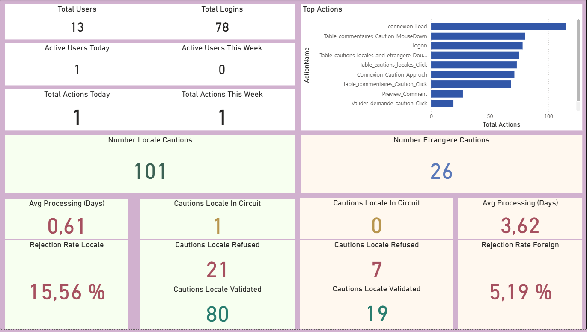
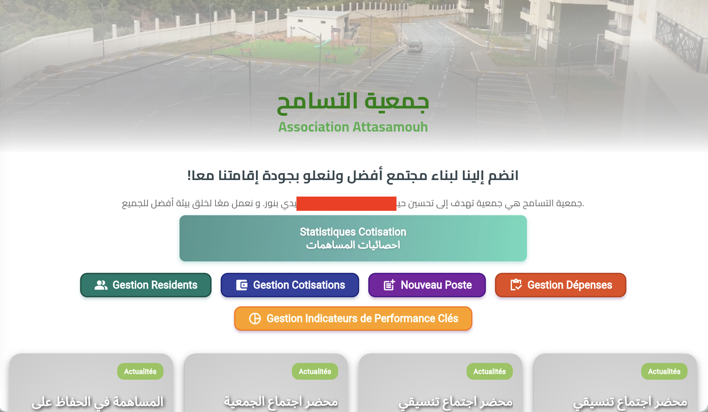

Projets Sélectionnés

Tableau de Bord Power BI
Conception d'un tableau de bord interactif sous Power BI permettant de suivre l'activité de l'application et les processus opérationnels. Développement de KPI, mesures DAX et rapports visuels pour analyser l'utilisation, les délais de traitement, les taux de validation et les performances des workflows à partir de données anonymisées.

Analytique Mini ERP de Production
Développement de tableaux de bord et de fonctionnalités analytiques pour un ERP de production, offrant une visibilité en temps réel sur les commandes, les workflows de production, l'affectation des tâches et les indicateurs de performance opérationnelle.

Digitalisation des Cautions de Bonne Exécution
Application desktop d'automatisation des flux d'approbations internes chez ENAC. Le délai de circulation et de validation des documents a été réduit de 15 jours à 4 jours.

AMISTA – Location de Véhicules
Application web complète de gestion de location automobile. Centralisation des contrats, suivi du parc en temps réel, facturation automatisée avec TVA et exports personnalisés en PDF/Excel. Réduction du temps de création des contrats de 45 à 5 minutes.

ROKN – Gestion d'Associations
Écosystème digital optimisant les cotisations financières, l'administration et la communication pour les associations de quartiers algériennes. Intègre un contrôle d'accès par rôles et un anonymat complet garantissant la confidentialité. Temps administratif réduit de 70%.

Mini ERP de Production
Plateforme modulaire de gestion de production incluant suivi de commandes, assignation de tâches, RBAC et APIs REST. Capacité de traitement passée de 49 à plus de 165 commandes/mois.

Plateforme Livraison MIZA Com
Co-fondation et architecture backend sur Google Cloud (GCP) d'une application de livraison multi-services desservant plus de 15 000 utilisateurs, axée sur la haute disponibilité.

Moteur d'Estimation de Coûts
Outil interne de calcul prévisionnel de ressources (humaines, matériels, consommables) intégrant un moteur de calcul de coûts robuste avec un système d'export Excel automatisé.

Système GED Entreprise
Conception d'un système GED/EDMS visant à centraliser l'indexation par rôles, la traçabilité des versions et la sécurisation des flux de documents sans papier.